旅游攻略——三亚
秋意正浓，凉风习习，这个秋天，我们一起去三亚旅游吧！
- 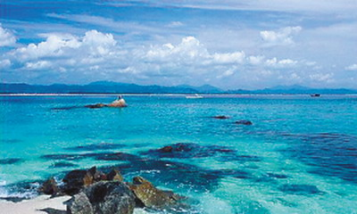
- 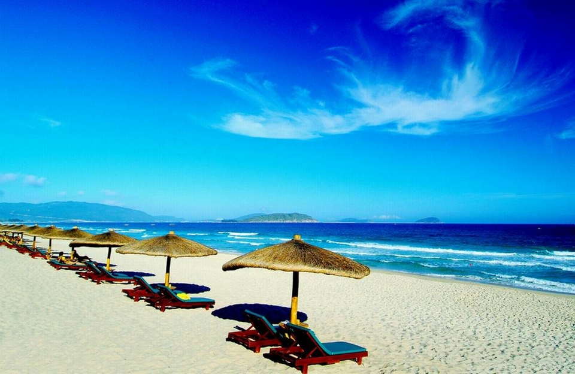
- 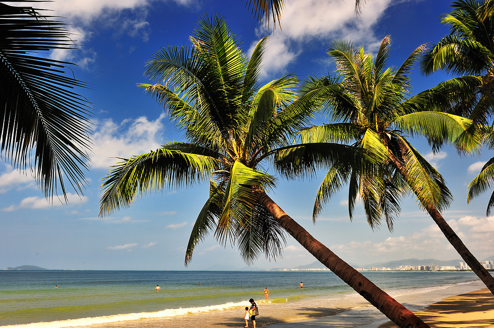
- 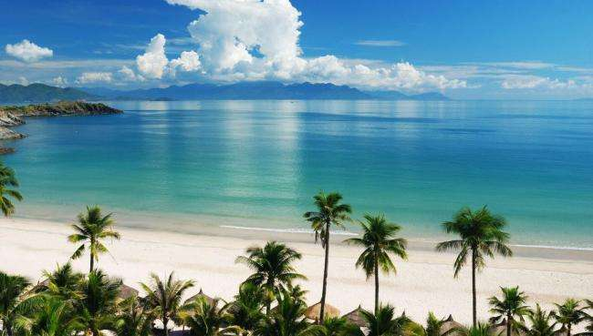
- 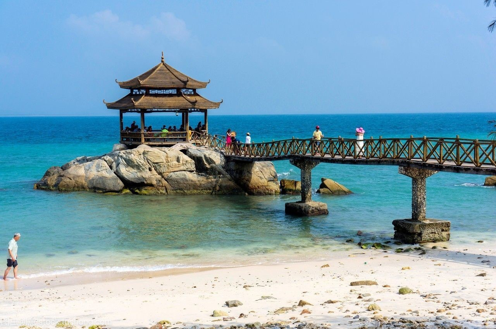
出发之前的准备
- 1、出行沙滩一家子：太阳伞、太阳帽、防晒霜、晒后修复液、墨镜、拖鞋
- 2、水中5宝：泳衣、泳镜、发绳（女生扎头发）、毛巾、防水手表（在水里的时候看时间用）
- 3、衣服：建议带些易干的衣物，另外三亚昼夜温差较大，最好带件长袖的衣服。
- 4、药品：藿香正气水（神器不解释）、眼药水、鼻舒，吃海鲜的话记得要带黄牛解毒片、黄连素、氟哌酸或其他同等功效的药品。
【关于天气】
- 1、其实严格意义上来讲三亚没有冬天和秋天，长久的夏天和短暂的春天是三亚的主要天气，冬天过去的时候尽量要多带夏天的衣服。
- 2、天气预报不能说不看，要看有没有台风，如果遇上台风来了的话，基本景区也不能去，也是天天刮风下雨，但是天气是否为晴天，天气预报一般不准，热带的天气每天都是雷雨，看看温度就好了，大多数时候也在25-32度左右。
【关于交通】
- 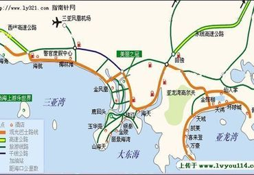
- 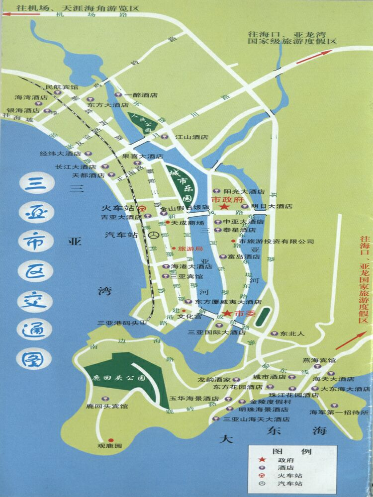
- 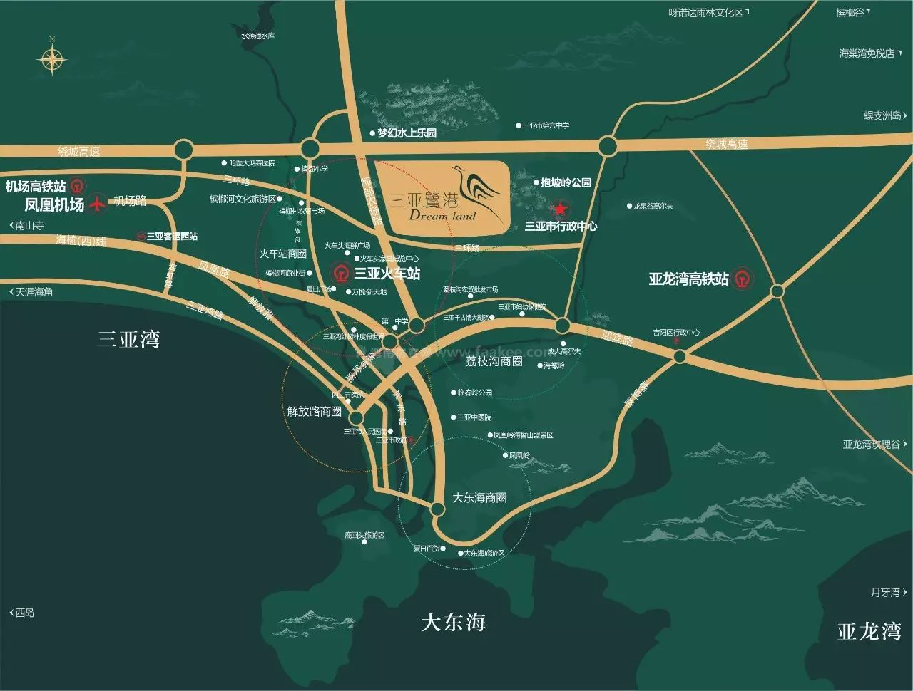
- 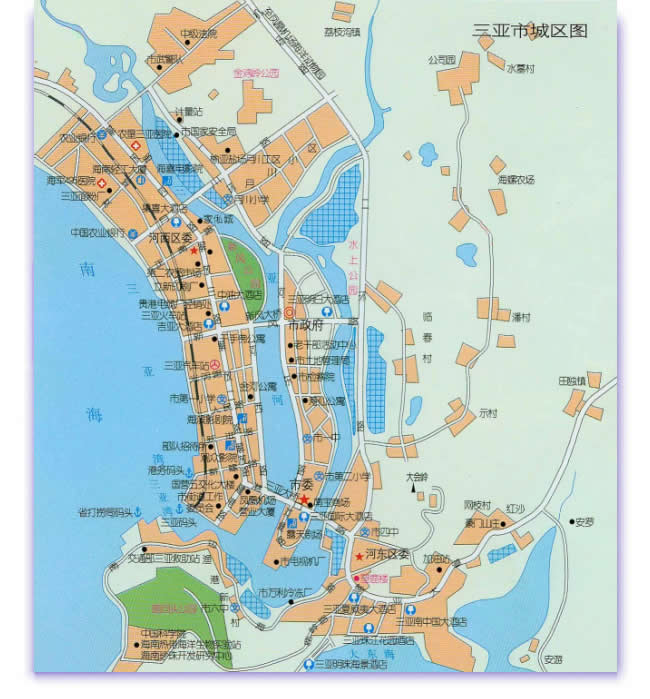
- 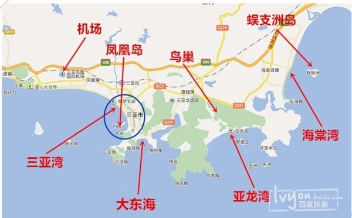
- 1、来三亚一般都是飞机，可以到三亚凤凰国际机场或者海口美兰国际机场，从海口到三亚可以坐环岛高铁，西线3个小时，东线1个半到2个小时。
- 2、到三亚的火车不是很多，目前有北京的可以直达，沿途京九线的一些城市也就可以直达，另外还可以坐火车到海口再转到三亚。
【关于美食】
- 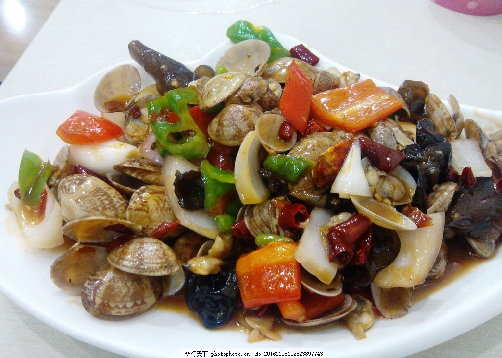
- 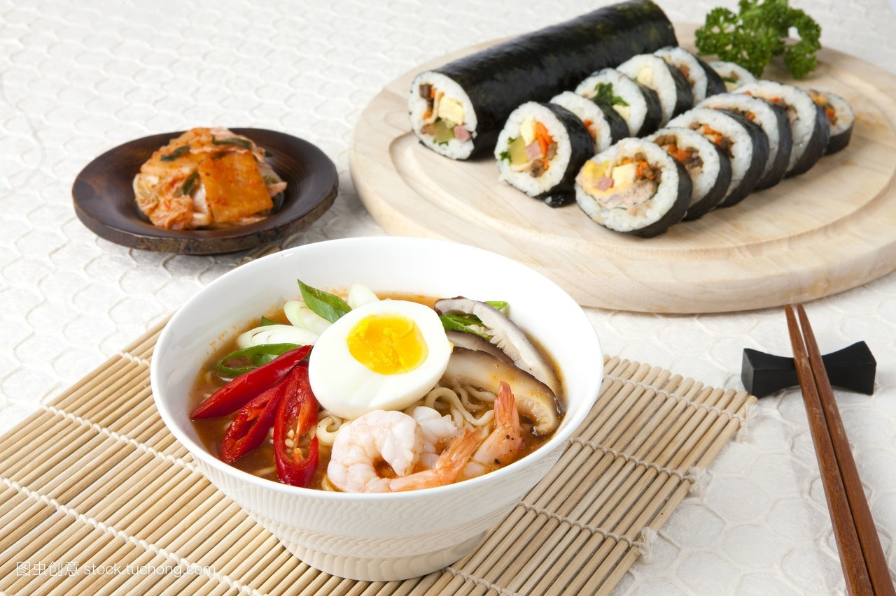
- 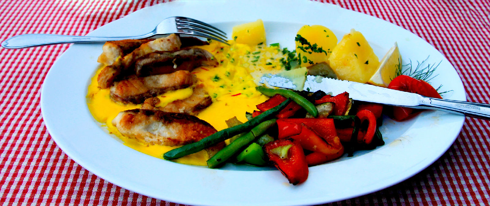
- 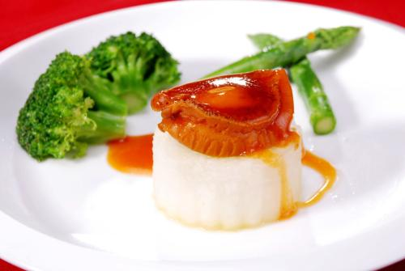
- 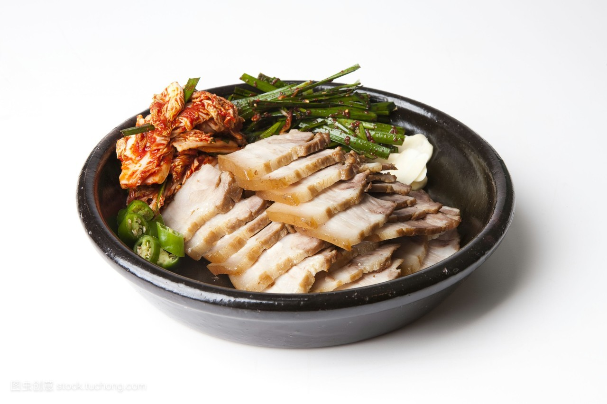
- 1、除了海鲜，三亚还有大量的水果，对爱吃水果人的来说可以称得上的宝地了，菠萝（三亚湾的海滩上就有人卖）、芒果、椰子、榴莲、香蕉等等，热带水果品类极多，而且品质也很好。
- 2、三亚还有很多当地的特色菜，比如文昌鸡、抱罗粉、菠萝饭、加积鸭、东山羊、和乐蟹之类的，都还是不错的，如果有时间，可以去尝尝，当然尽量选择相对正规一点的地方。
行程规划
第一天：到达三亚，自由活动
从杭州做飞机直接飞到三亚，接机后连人带行李一起送到酒店，我们住的是五星级金莎珺酒店。这个酒店有个超长的泳池，天气好的时候泳池看着是碧蓝色的，特别漂亮。
入住的那天天气不太好，外景拍出来不是太好看，我从酒店官网上扒了张图，你们感受下。

第二天：蜈支洲海岛1日游（白天）
蜈支洲岛是三亚最著名的水上娱乐景点之一,海岛离陆地有些距离，所以要坐船上去。通常坐船是要排队很久的，因为是从 安安 那边报的，走的是VIP通道很快就登船了。海岛的海水特别清澈，而且沙滩也很白很干净，光是站在岸上就能看到浅海的珊瑚礁。岛上风有些大，还好安安提前告诉我们记得要穿外套。那天我们玩了船潜和香蕉船，即使不会游泳也没关系，教练会提前教授潜水的知识，升降也是由他来控制的。整体来说强烈推荐去一趟，岛上的风景也很美！
第三天：亚龙爱立方——南山佛教文华园——天涯海角
先是去的亚龙湾的爱立方海滨乐园，这地方有很多水中水上娱乐项目，比较有名的是在一个餐厅里，边吃饭边看水中芭蕾的表演。另外，这里也可以潜水，因为有人工照料保养，所以这里的水也很清澈。只是我们拍的时候，不小心把脚插土里了，扬起了不少泥土。
第四天：宋城千古情——热带农业示范基地
去看了世界三大名秀的《宋城千古情》，表演很精彩，服装很好看，只是少部分服装看起来挺羞耻的，古代人都那么奔放的吗？
第五天：睡到自然醒，然后去到处逛逛
同行的朋友去了三亚国际免税店，旅社免费接送的。我和男朋友因为玩的太累就没去，到沙滩上去走了走。
说说感想吧，如果对三亚那边不是太熟悉，也没有认识的朋友 ，我是建议找个优质的向导安排或者是旅社。毕竟三亚一次玩不完的，有了跟团的经验后，对当地的环境有了一点的熟悉，今后如果想自己出游玩也比较有经验。
事实上，大部分时候比起网络上到处查攻略的我们，很多旅行社都一直持有着最新最优质的旅游信息。经过近几年旅游电商平台的洗涤，他们几乎把所有优质的旅游线路、景点、酒店等内容整合为一个成熟的产品了，所以单这点而言，选择旅社或是旅游向导是最省心省力的选择。
另外，比起短期宰客的高利润，他们更愿选择长期的发展和经营自己的品牌形象，获取稳定的客源。所以基本不用担心被坑，只需要提防当地的一些无良商家就可以了。 反正一句话，出来旅游就是开心玩的，没必要给自己添堵。把适合的预算交给专业的人，让他们忙活，自己无脑玩对了。